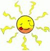

1NA - FYSIKK |
|||
| NB! EMNER MERKET MED * GJELDER IKKE YRKESFAG! | |||
|
ENERGI |
Energisle forteller om ulike energikilder. ENØK = energiøkonomisering. |
||
|
ELEKTRISITET |
Om statisk elektrisitet og strøm - fra Newton/NRK. Om elektrisitet og magnetisme - en interaktiv side (am.), krever ShockWave |
||
| BØLGER
OG STRÅLING  |
Institutt for energiteknikk (IFE). Stråling og helse - fra Høgskolen i Tromsø. *Lys, øyet og syn: Disseksjon av kuøye (am). Optiske illusjoner a la den nederlanske kunstneren M.C. Escher (am.). *Lyd, øret og hørsel: Ørets anatomi og funksjon - fra Høgskolen i Sør-Trøndelag. |
||
|
FYSIKKHISTORIE |
En oversikt over personer som har gitt viktige bidrag til fysikken (am.). |
||